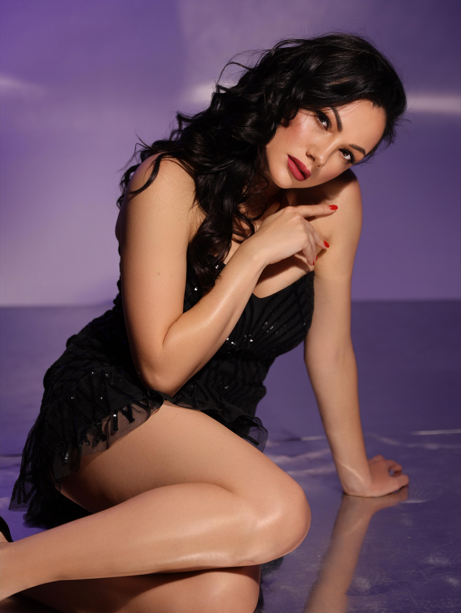
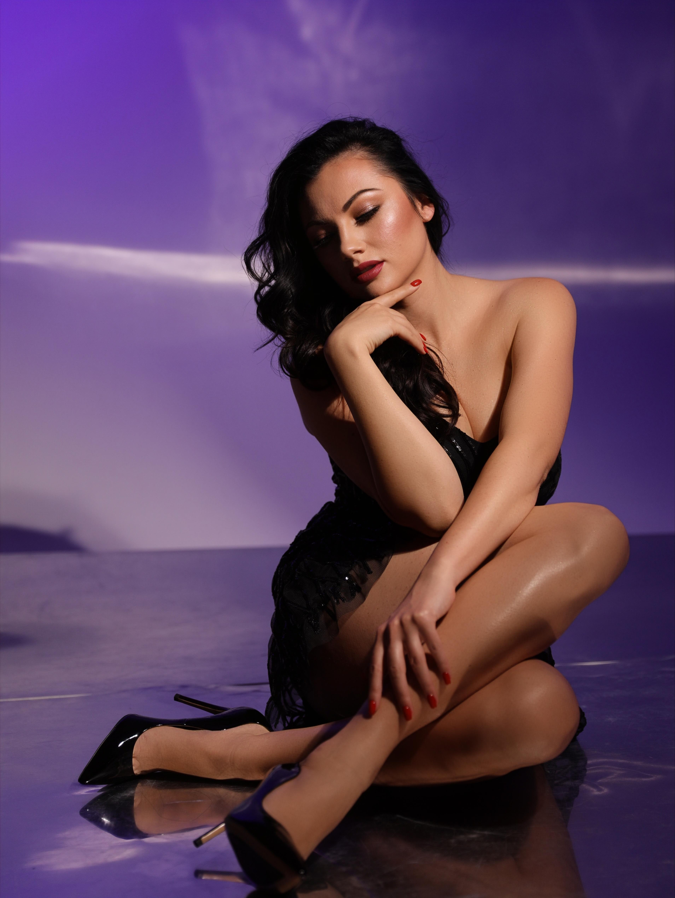
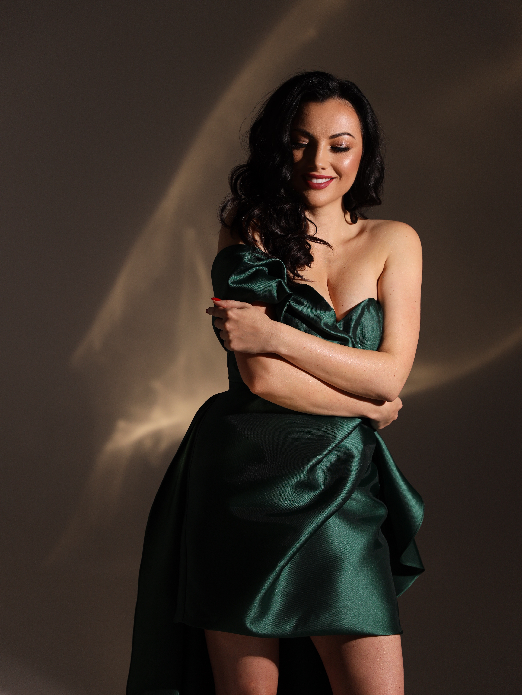

Ana Danch Project – Preparatory Photo Session (November 2021)

Basic Information
| Person | Uliana Myroslavivna Danchul (Уляна Мирославівна Данчул) |
| Former Name | Uliana Myroslavivna Latyk (Уляна Мирославівна Латик) |
| Project | Ana Danch |
| Material Type | Preparatory Photo Session |
| Period | November 2021 |
| Exact Date | Unknown |
| Project Phase | Preparatory Period |
| Photographer | Уляна Кіраль |
| Studio | FABRIK STUDIO |
| Project Producer | Oleksandr Serhiyovych Danchul (Олександр Сергійович Данчул) |
| Archive Category | Photos / Photo Session |
| Preserved Materials | Six photographs |
Description
This archival record documents the November 2021 preparatory photo session for the Ana Danch project, featuring Uliana Myroslavivna Danchul (Уляна Мирославівна Данчул).
Following her marriage, Uliana Myroslavivna Latyk became Uliana Myroslavivna Danchul. The November 2021 photo session belongs to the final preparatory period of the music project developed under the stage name Ana Danch.
The idea for the Ana Danch project had emerged at the beginning of 2020 following a prolonged creative break. The project was conceived to bring together songs from Uliana's earlier artistic periods while establishing a new stage for future music under the Ana Danch name.
The project concept included earlier songs from Uliana's career, new interpretations of Ukrainian folk songs, and new author's songs and compositions created independently or in collaboration with other authors and musicians in Ukrainian, English and other languages.
The producer of the Ana Danch project was Oleksandr Serhiyovych Danchul (Олександр Сергійович Данчул).
Two photo sessions were created during the preparatory period of the project: the first in March 2020 and the second in November 2021. This archival record documents the second of those sessions.
The November 2021 session was photographed by Уляна Кіраль at FABRIK STUDIO.
Archive Information
| Name at the Time | Uliana Myroslavivna Danchul (Уляна Мирославівна Данчул) |
| Former Name | Uliana Myroslavivna Latyk (Уляна Мирославівна Латик) |
| Project Name | Ana Danch |
| Project Development Began | Beginning of 2020 |
| Photo Session Period | November 2021 |
| Exact Date | Unknown |
| Project Phase | Preparatory Period |
| Project Producer | Oleksandr Serhiyovych Danchul (Олександр Сергійович Данчул) |
| Public Launch of Ana Danch Project | 16 November 2021 |
| Number of Preserved Photographs | 6 |
| Archive Category | Photos / Photo Session |
Credits
| Subject | Uliana Myroslavivna Danchul |
| Project | Ana Danch |
| Photography | Уляна Кіраль |
| Studio | FABRIK STUDIO |
| Project Producer | Oleksandr Serhiyovych Danchul (Олександр Сергійович Данчул) |
Source Information
| Source Type | Original Photographic Material |
| Material Type | Preparatory Photo Session |
| Period | November 2021 |
| Exact Date | Not identified |
| Photographer | Уляна Кіраль |
| Studio | FABRIK STUDIO |
| Studio Website | https://www.fabrik-studio.com/ |
| Preserved Photographs | 6 |
Archive Materials
Ana Danch project preparatory photo session, November 2021. Photograph 1 of 6.

Ana Danch project preparatory photo session, November 2021. Photograph 2 of 6.

Ana Danch project preparatory photo session, November 2021. Photograph 3 of 6.

Ana Danch project preparatory photo session, November 2021. Photograph 4 of 6.

Ana Danch project preparatory photo session, November 2021. Photograph 5 of 6.

Ana Danch project preparatory photo session, November 2021. Photograph 6 of 6.
Notes
This photo session documents the second preparatory photo session created for the Ana Danch project, following the first session held in March 2020.
By the time of this November 2021 session, Uliana Myroslavivna Latyk had married and became Uliana Myroslavivna Danchul.
The Ana Danch project was conceived as a continuation and consolidation of Uliana's previous artistic activity while establishing a new stage for future releases under the Ana Danch name.
The project was planned to encompass earlier songs from Uliana's career, new interpretations of Ukrainian folk songs, and newly created songs and collaborations in Ukrainian, English and other languages.
The project was produced by Oleksandr Serhiyovych Danchul (Олександр Сергійович Данчул).
The launch of the project had been postponed several times during the global COVID-19 pandemic. The Ana Danch project ultimately launched on 16 November 2021, the singer's birthday.
Photography for this November 2021 session is credited to Уляна Кіраль. The photo session took place at FABRIK STUDIO.
The exact day of the photo session within November 2021 has not been confirmed and is therefore not supplied by assumption.
Six photographs from this photo session are preserved in the Ana Danch Archive and are presented together as one archival record.